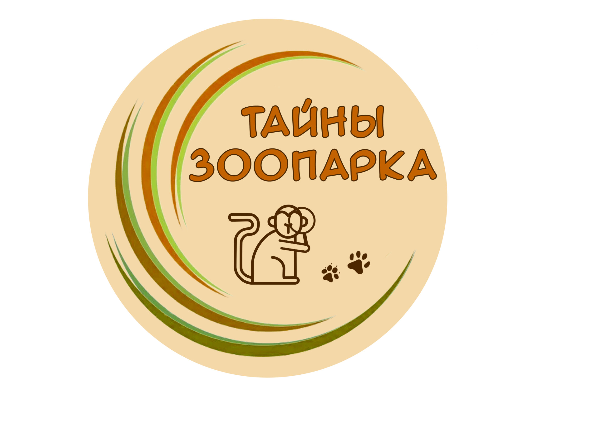
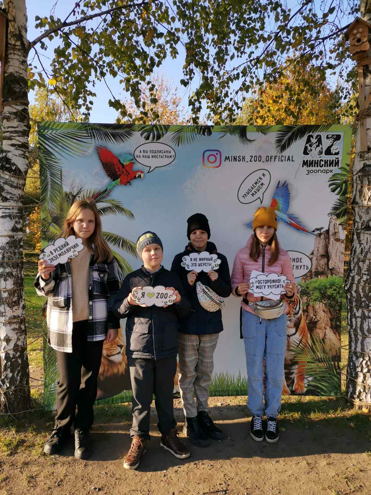
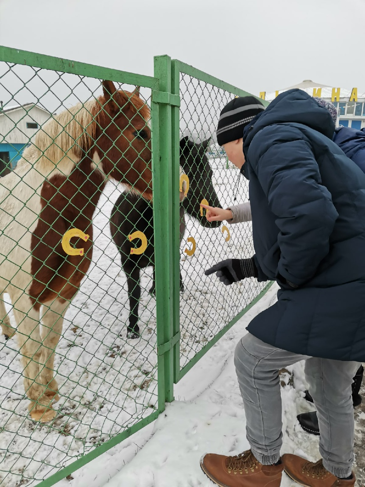

МИНСКИЙ ЗООПАРК
Цены
Зоопарк ---- 12 рублей
Динопарк ---- 8 рублей
Зоопарк + Динопарк ---- 18 рублей
Детям до 6 лет и инвалидам 1 и 2 группы вход бесплатный
Кружки
Биологический кружок
“Тайны зоопарка”
Всех неравнодушных к живой природе ребят, которые стремятся познавать и изучать все происходящее вокруг, приглашаем в наш биологический кружок «Тайны зоопарка».
Здесь Вы узнаете много нового об удивительном мире живой природы, а так же увидите зоопарк изнутри и изведаете его тайны. Интересные обзорные и тематические экскурсии дадут возможность подробно рассмотреть и изучить каждого обитателя зоопарка и закрепить «на практике» полученные знания.
В ходе занятий ребята посетят кормокухню, разберутся в рационах, особенностях питания животных и уходе за ними. Познакомятся со всеми обитателями зоопарка и пообщаются с зоотехниками. Постигнут тайны работы ветврачей и трудности, с которыми они сталкиваются.
 Экскурсии
Экскурсионная группа комплектуется из расчета 20 и менее человек. Стоимость обзорной экскурсии по открытой территории зоопарка в составе 20 человек – 50р., оплата дополнительных людей к группе 3р. с человека (максимальное количество в одной группе 25 человек).
Экскурсоводы не несут ответственность за детей, находящихся на экскурсии. Сопровождающие обязаны проследить за поведением детей не зависимо от их возраста.
40 человек – 2 экскурсионные группы стоимость 100р., оплата дополнительных людей к группе 3р. с человека (максимальное количество человек в двух экскурсионных группах 50 человек). Экскурсия проходит на открытой территории зоопарка. В случаях плохих погодных условий в экскурсию могут быть включены павильоны: аквариум, террариум, экзотариум.
Опоздание экскурсионной группы более чем на 30 минут от заявленного времени снимает с зоопарка обязательства по предоставлению услуг экскурсовода! Оплата за экскурсию не возвращается! Обращаем ваше внимание, что в выходные дни экскурсоводы выходят к согласованному заранее времени!
VSU Shpakova Y.A. 2023